- Author
- Argument
- Company
- Date
The error in altimeter readings caused by the variation of the static pressure near the source is known as:
VFE is the maximum speed:
The airspeed indicator of a twin-engine aircraft comprises different sectors and colour marks. The blue line corresponds to the:
VLE is the maximum:
At a constant calibrated airspeed (CAS), the Mach number:
The primary factor which makes the servo-assisted altimeter more accurate than the simple pressure altimeter is the use of:
The reading of a Mach indicator is independent of:
The QNH is by definition the value of the:
VNO is the maximum speed:
A pitot blockage of both the ram air input and the drain hole with the static port open causes the airspeed indicator to:
A pitot tube covered by ice which blocks the ram air inlet will affect the following instrument(s):
At sea level, on a typical servo altimeter, the tolerance in feet from indicated is:
If the static source of an altimeter becomes blocked during a descent the instrument will:
The advantages provided by an air data computer to indicate the altitude are: 1) Position/pressure error correction. 2) Hysteresis error correction 3) Remote data transmission capability. 4) Capability of operating as a conventional altimeter in the event of a failure. The combination of correct statements is:
The density altitude is:
The velocity of sound at the sea level in a standard atmosphere is:
ln a standard atmosphere and at the sea level, the calibrated airspeed (CAS) is:
VLO is the maximum:
The limits of the green scale of an airspeed indicator are:
lf an aircraft is equipped with one altimeter which is compensated for position error and another altimeter which is not, and all other factors being equal:
When climbing at a constant Mach number below the tropopause, in ISA conditions, the calibrated airspeed (CAS) will:
The limits of the yellow scale of an airspeed indicator are:
During a straight and uniform climb, the pilot maintains a constant calibrated airspeed (CAS):
The purpose of the vibrating device of an altimeter is to:
If the outside temperature at 35 000 feet is -40 °C, the local speed of sound is:
The calibrated airspeed (CAS) is obtained by applying to the indicated airspeed (IAS):
Machmeter readings are subject to:
The pressure altitude is the altitude corresponding:
The Mach number is the:
When descending through an Isothermal layer at a constant calibrated airspeed (CAS), the true airspeed (TAS) will:
In case of accidental closing of an aircraft's left static pressure port (rain, birds), the altimeter:
The airspeed indicator of an aircraft is provided with a moving red and white hatched pointer. This pointer indicates the:
With a pitot probe blocked due to ice build up, the aircraft airspeed indicator will indicate in descent a:
Given: Ts = the static temperature (SAT) Tt = the total temperature (TAT) Kr = the recovery coefficient M = the Mach number The total temperature can be expressed approximately by the formula:
The operating principle of the vertical speed indicator (VSI) is based on the measurement of the rate of change of:
The response time of a vertical speed detector may be improved by adding a:
The vertical speed indicator VSI is fed by:
The airspeed indicator circuit consists of pressure sensors. The pitot tube directly supplies:
The Mach number is:
The pressure measured at the forward facing orifice of a pitot tube is the:
The hysteresis error of an altimeter varies substantially with the:
The velocity maximum operating (VMO ) is a speed expressed in:
If the static source to an airspeed indicator (ASI) becomes blocked during a descent the instrument will:
All the anemometers are calibrated according to:
if the static source to an altimeter becomes blocked during a climb, the instrument will:
VNE is the maximum speed:
The advantages of an ADC over a traditional pitot - static system are: 1) position and compressibility correction 2) reduced lag 3) diitity to supply many instruments 4) daility to act as an altimeter following failure
At a constant Mach number, the calibrated airspeed (CAS):
On board an aircraft the altitude is measured from the:
Sound propagates through the air at a speed which only depends on:
ln an Air Data Computer (ADC), aeroplane altitude is calculated from:
With a constant weight, irrespective of the airfield altitude, an aircraft always takes off at the same:
For a constant calibrated airspeed (CAS) and a level flight, a fall in ambient temperature will result in a:
The static pressure error of the static vent on which the altimeter is connected varies substantially with the:
indication of Mach number is obtained from:
When flying from a sector of warm air into one of colder air, the altimeter will:
The principle of the Mach indicator is based on the computation of the ratio:
(Refer to figure 022-44) The atmospheric pressure at FL70 in a STANDARD +10 atmosphere is:
The altitude indicated on board an aircraft flying in an atmosphere where all the atmosphere layers below the aircraft are cold is:
A leak in the pitot total pressure line of a non-pressurized it to aircraft to an airspeed indicator would cause it to:
Today's airspeed indicators (calibrated to the Saint-Venant formula), indicate, in the absence of static (and instrumental) error:
The limits of the white scale of an airspeed indicator are:
The altitude indicated on board an aircratt flying in an atmosphere where all atmosphere layers below the aircraft are warm is:
The altimeter consists of one or several aneroid capsules located in a sealed casing. The pressures in the aneroid capsule (i) and casing (ii) are respectively:
After an aircraft has passed through a volcanic cloud which has blocked the total pressure probe inlet of the airspeed indicator, the pilot begins a stabilized descent and ?nds that the indicated airspeed:
in a non-pressurized aircraft, if one or several static pressure ports are damaged, there is an ultimate emergency means for restoring a practically correct static pressure intake:
During a climb after takeoff from a contaminated runway, if the total pressure probe of the airspeed indicator is blocked, the pilot finds that indicated airspeed:
The vertical speed indicator of an aircraft flying at a true airspeed of 100 kts, in a descent with a slope of 3° indicates:
An Air Data Computer (ADC):
Considering the maximum operational Mach number (MMO) and the maximum operational speed (VMO), the captain of a pressurized aircraft begins his descent from a high flight level. In order to meet his scheduled time of arrival, he decides to use the maximum ground speed at any time of the descent. He will be limited:
The altimeter is fed by:
Calibrated airspeed is:
An aircraft is flying at an indicated altitude of 16 000 ft. The outside air temperature is -30 °C. What is the true altitude of the aircraft?
An aircraft is flying straight and level, over a warm air mass. The altimeter reading will be:
A leak in the pitot pressure line of a nonpressurized to an airspeed indicator would cause it to:
A blocked pitot head with a clear static source causes the airspeed indicator to:
A dynamic pressure measurement circuit is constituted of the following pressure probes:
A vertical speed indicator measures the difference between:
An air data computer 1) supplies the ground speed and the drift (angle) 2) determines the total temperature and the true altitude 3) receives the static pressure and the total pressure 4) supplies the true airspeed to the inertial unit 5) determines the aircraft altitude The combination regrouping all the correct statements is:
An aircraft is equipped with one altimeter that is compensated for position error and another one altimeter that is not. Assuming all other factors are equal, during a straight symmetrical flight:
An airplane is cruising at FL 190. The auto-throttle maintains a constant CAS. If the total temperature decreases, the Mach number:
An airplane is cruising at FL 220. The auto-throttle maintains a constant CAS. If the total tempperature increases, the mach number:
An airspeed indicator displays:
An airspeed indicator includes a capsule; inside this capsule is:
An altimeter contains one or more anuoid capsules. inside these capsules is:
An aneroid capsule: 1) measures differential pressure 2) measures absolute pressure 3) is used for low pressure measurement 4) is used for very high pressure measurement The combination regrouping all the correct statements is:
As a result of the failure of the central air data computer (CADC), the inertial navigation system (INS) will no longer provide information about:
Assuming that the CAS remains constant, if the total pressure probe is blocked, the IAS:
Assuming the flight level and Mach number remain constant, when the OAT decreases:
Assuming the flight level and Mach number remain constant, when the OAT increases:
At flight level and Mach number constant, if the total temperature decreases, the CAS:
Below the tropopause in standard conditions, when climbing at a constant Mach number:
Below the tropopause in standard conditions, when descending at a constant CAS:
Below the tropopause in standard conditions, when descending at a constant Mach number:
Calibrated airspeed (CAS) is obtained from indicated airspeed (IAS) by correcting for the following errors: 1) position 2) compressibility 3) instrument 4) density The combination regrouping all the correct statements is:
Calibrated airspeed (CAS) is obtained from indicated airspeed (IAS) by correcting for the:
Calibrated airspeed (CAS) is:
CAS can be obtained from the following data:
Concerning the airspeed indicator, IAS is:
Considering an airspeed Indicator, a second stripped needle, if installed, indicates:
Considering the relationship between CAS and EAS:
During a climb at a constant calibrated airspeed (CAS) below the tropopause in ISA conditions:
During a climb at a constant calibrated airspeed (CAS) below the tropopause in standard conditions:
During a climb at a constant IAS below the tropopause in ISA conditions:
During a climb at a constant Mach number below the tropopause in ISA conditions:
During a climb, the total pressure probe of the airspeed indicator becomes blocked; if the pilot tries to maintain a constant indicated airspeed, the true airspeed:
During a climb at a constant Mach number below the tropopause in ISA conditions:
During a descent at a constant calibrated airspeed (CAS) below the tropopause in ISA conditions:
During a descent at a constant IAS below the tropopause in ISA conditions:
During a descent at a constant Mach number below the tropopause in ISA conditions:
During a descent at a constant Mach number below the tropopause in ISA conditions:
During descent, the total pressure probe of the airspeed indicator becomes blocked. In this case: 1) IAS becomes greater than CAS 2) IAS becomes lower than CAS. 3) Maintaining IAS constant, VMO may be exceeded. 4) Maintaining IAS constant, aircraft may stall. The combination regrouping all the correct statements is:
Equivalent airspeed (EAS) is obtained from calibrated airspeed (CAS) by correcting for the following errors: 1) position 2) compressibility 3) instrument 4) density The combination regrouping all the correct statements is:
Equivalent airspeed (EAS) is obtained from calibrated airspeed (CAS) by correcting for:
Equivalent airspeed (EAS) is obtained from Indicated airspeed (IAS) by correcting for the following errors: 1) instrument 2) position 3) density 4) compressibility The combination regrouping all the correct statements is:
Equivalent airspeed (EAS) is:
Equivalent airspeed (EAS) ls:
For TAS calculations, the ADC uses the following parameters: 1) SAT 2) TAT 3) static pressure 4)total pressure The combination regrouping all the correct statements is:
Given: Pt = total pressure Ps = static pressure Pd = dynamic pressure
Given: Pt = total pressure Ps = static pressure Pso = static pressure at sea level Calibrated airspeed (CAS) is a function of:
Given: Pt = total pressure Ps = static pressure Pso = static pressure at sea level Dynamic pressure is:
Given: Pt = total pressure Ps = static pressure Dynamic pressure is:
Given: Mach number M = 0.70 Measured impact temperature = - 48 °C the recovery factor (Kr) of the temperature probe = 0.85 The OAT is:
Given: Pt = total pressure Ps = static pressure Pd = dynamic pressure The airspeed indicator is fed by:
lf the total pressure intake on the pitot tube is rapidly clogged up by ice during flight, what effect will it have on the airspeed indication during a climb?
lf an aircraft maintaining a constant CAS and flight level is flying from a cold air mass into warmer air:
lf an aircraft maintaining a constant CAS and flight level is flying from a warm air mass into colder air:
If OAT decreases when at a constant Mach number:
If OAT decreases when at a constant TAS:
If the total temperature decreases while maintaining a constant CAS and flight level:
If OAT increases when at a constant Mach number:
If OAT increases when at a constant TAS:
If the total temperature increases while maintaining a constant CAS and flight level:
If the pitot tube becomes blocked during a descent, the airspeed indicator:
if the pitot tube ices up during a ?ight, the affected equipment(s) is (are): 1) the altimeter 2) the variometer 3) the airspeed indicator The combination regrouping all the correct statements is:
if the static intakes are completely clogged up by ice during a climb, the VSI shows:
lf the static source of a Vertical Speed indicator (VSI) becomes blocked during a climb the instrument will:
If, during a descent: - the pneumatic altimeter reading is constant - the VSI shows zero - the lAS is increasing the most likely explanation is that:
ln a standard atmosphere and at the sea level, the equivalent airspeed (EAS) is:
In standard atmosphere, when descending at constant CAS:
ln the absence of position and instrument errors, CAS is equal to:
ln the absence of position and instrument errors, IAS is equal to:
ln the absence of position and instrument errors:
In the directional gyro the detection system of the local vertical feeds:
Maintaining CAS and flight level constant, a fall in ambient temperature results in:
Parallax error is:
TAS can be obtained from the following data:
The altimeter indicates true altitude:
The altimeter is supplied with:
The altimeter of your aircraft indicates 10 000 ft with a subscale setting of 1013.25 mb. OAT is +5 °C. The pressure altitude of the aircraft is:
The altimeter of your aircraft indicates 11 000 ft with a subscale-setting of 1013.25 mb. The QNH is 1023 hPa. OAT is +3 °C. The pressure altitude of the aircraft is:
The altimeter of your aircraft indicates 12 000 ft with a subscale-setting of 1013.25 mb. QNH is 999 hPa. The pressure altitude of the aircraft is:
The altimeter of your aircraft indicates 15 000 ft with a subscale setting of 1013.25 mb. OAT is -21 °C. The pressure altitude of the aircraft is:
The altimeter of your aircraft indicates 16 000 ft with a subscale setting of 1013.25 mb. QNH is 993 hPa. OAT is -3 °C. The pressure altitude of the aircraft is:
The altimeter of your aircraft indicates 17 000 ft with a subscale setting of 1013.25 mb. QNH is 1.031 hPa. The pressure altitude of the aircraft is:
The compressibility correction to CAS to give EAS: 1) may be positive 2) is always negative 3) depends on Mach number only 4) depends on pressure altitude only The combination regrouplng all the correct statements is:
The indicated Mach number is independent from:
The input data of an ADC are : 1) OAT 2) TAT 3) static pressure 4) total pressure The combination regrouping all the correct statements is:
The Mach number is proportional to the ratio: (Note: "a" indicates the local speed of sound)
The maximum TAS is obtained at:
The parameter that determines the relationship between EAS and TAS is:
The position error of the static vent on which the altimeter is connected varies substantly with the :
The pressure capsule of an airspeed indicator is sensitive to the difference:
The QNH is by definition the value of the:
The total pressure probe (pitot tube) comprises a mast which moves its port to a distance from the aircraft skin in order:
True airspeed (TAS) ls equal to equivalentairspeed (EAS) only if:
True airspeed (TAS) is obtained from calibrated airspeed (CAS) by correcting for the following errors: 1) instrument 2) compressibility 3) position 4) density The combination riegrouping all the correct statements is:
True airspeed(TAS) is obtained from equivalent airspeed (EAS) by correcting for:
True airspeed (TAS) is obtained from indicated airspeed (IAS) by correcting for the following errors: 1) instrument 2) position 3) compressibility 4) density The combination regrouping all the correct statements is:
True airspeed (TAS) is:
True airspeed (TAS) is:
True airspeed (TAS) ls:
When climbing at a constant CAS in a standard atmosphere:
When climbing at a constant CAS in a standard atmosphere: 1) TAS decreases. 2) TAS increases. 3) Mach number increases. 4) Mach number decreases. The combination regrouping all the correct statements is:
When climbing at a constant CAS through an isothermal layer, the Mach number:
When climbing at a constant CAS:
when climbing at a constant Mach number through an isothermal layer, the CAS:
When climbing at a constant Mach number:
When descending at a constant CAS through an isothermal layer, the Mach number:
When descending at a constant CAS:
When descending at a constant CAS:
When descending at a constant Mach number:
When flying in cold air (colder than standard atmosphere), indicated altitude is:
When flying in cold air (colder than standard atmosphere), the altimeter will:
When flying in warm air (warmer than standard atmosphere), Indicated altitude is:
With constant weight and configuration, an aircraft always takes off at the same:
With EAS and pressure altitude, we can deduce:
with EAS and density altitude, we can deduce:
A vibrator may be fitted to an altimeter to overcome:
QNH is:
The vertical reference of a data generation unit is:
An Air Data Computer (ADC) obtains altitude from:
What is VMO calculated from?
Descending from FL 390 at maximum groundspeed, what will the pilot be limited by:
The white arc on the ASI indicates:
An ASI circuit consists of pressure sensors. The pitot probe measures:
Mach number is defined as the ratio of:
if a pitot source is blocked in an airspeed indicator (ASI), the drain hole is blocked, but the static source is open, what will happen?
What are the inputs to the ADC? 1) OAT 2) dynamic pressure 3) TAT 4) static pressure 5) electric power 6) pitot pressure 7) AOA
VNO, is the maximum speed which:
if while level at FL 270, at a constant CAS, temperature falls, what happens to the Mach number?
If the static vent becomes blocked on an unpressurised aircraft, what could you do?
What is density altitude?
Aircraft is travelling at 100 kts on a 3° glideslope. What is the rate of descent?
If the pitot tube is leaking (and the pitot drain ls blocked) in a nonpressurized A/C, the ASl will:
At sea level lSA, TAS:
What will the altimeter read if the layers beneath the aircraft are all colder than standard?
The indications of a machmeter are independent of:
What is the speed of sound at sea level, ISA?
What is the speed of sound at 25 000 ft and -28 °C?
What is the speed of sound at 30 000 ft and -40 °C?
If a constant CAS is maintained in a climb, what happens to the Mach number?
What are the upper and lower limits of the yellow arc on an ASI?
You are flying at a constant FL290 and constant Mach number. The total temperature increases by 5 °C. The CAS will:
lf an aircraft is descending at constant Mach number, and the total air temperature remains constant, what happens to the CAS?
The green arc on the ASI is used to identity which speed range?
Pressure altitude may be defined as:
An aircraft is flying at constant indicated altitude over a cold air mass. The altimeter reading will be:
What is indicated on the airspeed indicator when the static vent blocks during a descent?
if you maintain the same CAS and altitude FL 270, and the temperature increases, what happens to the Mach number?
A VMO / MMO alarm system on an airline aircraft is fitted with an anerold capsule which is:
At 35 000 feet the OAT Is -40 °C. What is the local speed of sound?
ln the building principle of a gyroscope, the best efficiency is obtained through the concentration of the mass:
Concerning the directional gyro indicator, the lattitude at which the apparent wander is equal to 0 is:
The heading information originating from the gyromagnetic compass flux valve is sent to the:
A gravity erector system is used to correct the errors on:
A turn indicator is an instrument which indicates rate of turn. Rate of turn depends upon: 1) bank angle 2) aeroplane Speed 3) aeroplane weight The combination regrouping the correct statements is:
A failed RMI rose is locked on 090° and the ADF pointer indicates 225°. The relative bearing to the station is:
An aircraft is flying at a 120 kts TAS. in order to achieve a Rate 1 turn, the pilot will have to bank the aircraft at an angle of:
On the ground, during a right tum, the turn indicator indicates:
An airborne instrument, equipped with a gyro with 2 de grees of freedom and a horizontal spin axis is: (Note: the degreefs) of freedom of a gyro does not take into account its rotor spin axis)
A laser gyro consists of:
The flux valve in a Remote lndica ting Magnetic Compass:
When an aircraft has turned 270 degrees with a constant attitude and bank, the pilot observes the following on a classic artificial horizon:
If the needle and the ball of a Turn and Slip indicator both show right, what does it indicate:
What is the Schuler period?
The gyromagnetic compass torque motor:
The input signal of the amplifier of the gyromagnetic compass resetting device originates from the:
A DGI has?
The torque motor of a gyro stabilised magnetic compass:
The directional gyro axis has a zero apparent drift when it is located:
In a right turn while taxiing, the correct indications on a Turn and Slip indicator are:
During an acceleration phase at constant attitude, the resetting principle of the artificial horizon results in the horizon bar indicating a:
On the ground, during a left turn, the turn indicator indicates:
The rigidity of a gyro is improved by:
The maximum drift error sensed by an uncompensated DGI will be:
A Stand-by-horizon or emergency attitude indicator:
A gyromagnetic compass or heading reference unit is an assembly which always consists of: 1) a directional gyro 2) a vertical axis gyro 3) an Earth's magnetic field detector 4) an azimuth control 5) a synchronising control The combination of correct statements is:
When, in flight, the needle and ball of a needle-and-ball indicator are on the left, the aircraft is:
A standby artificial horizon must have the following properties: 1) a remote gyro 2) its own power supply 3) only to be used in emergency 4) its own gyro 5) one for each certified pilot
ln a DGI what error is caused by the gyro movement relative to the Earth?
The gimbal error of the directional gyro is due to the effect of:
In a left turn while taxiing, the correct indications are:
Compared with a conventional gyro, a laser gyro:
in a gyro magnetic compass the flux gate transmits information to the:
A flux valve senses the changes in orientation of the horizontal component of the earth's magnetic field. 1) The flux valve is made of a pair of soft iron bars. 2) The primary coils are fed A.C. voltage (usually 487.5 Hz). 3) The information can be used by a flux gate" compass or a directional gyro. 4) The flux gate valve casing is dependent on the aircraft three inertial axis. 5) The accuracy on the value of the magnetic field indication is less than 0.5%. Which of the following combinations contains all of the correct statements?
A gravity erector system corrects errors on a:
A 2 axis gym measuring vertical changes will have:
A directional gyro is: 1) a gyroscope free around two axis 2) a gyroscope free around one axis 3) capable of self-orientation around an Earth-tied direction 4) incapable of self-orientation around an Earth-tied direction The combination which regroups all of the correct statements is:
The indication of the directional gyro as an on-board instrument are valid only for a short period of time. The causes of this inaccuracy are: 1) The Earth's rotation. 2) The longitudinal acceleration. 3) The aircraft's motion over the surface of the Earth. 4) The mechanical defects of the gyro. 5) The gyros weight. 6) The gimbal mount of the gyro rings. The combination of correct statements is:
What is the maximum drift of a gyro, due to Earth rate?
Among the systematic errors of the "directional gyro", the error due to the Earth rotation makes the north reference turn in the horizontal plane. At a mean latitude of 45°N, this reference turns by:
A slaved directional gyro derives it's directional signal from:
(Refer to figure 022-08) 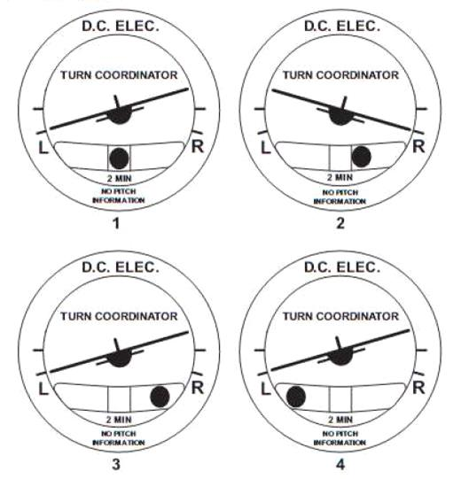
The diagram representing a left turn with insufficient rudder is:
(Refer to figure 022-41) 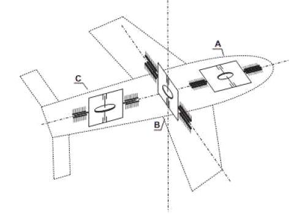
The diagram shows three gyro assemblies: A, B and C. Among these gyros:
1) one is a roll gyro
2) one is a pitch gyro
3) one is a yaw gyro
The correct matching of gyros and assemblies is:
(Refer to figure 022-40) 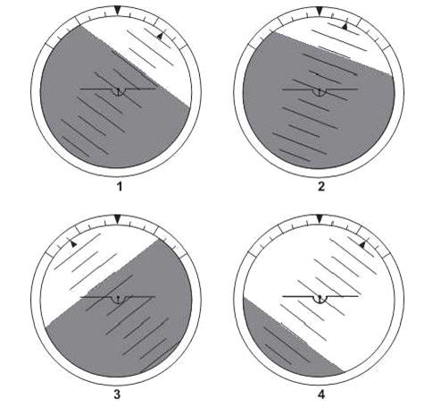
The diagram which shows a 40° left bank and 15° nose down attitude is number:
During a deceleration phase at constant attitude, the control system of an air driven artificial horizon results in the horizon bar indicating a:
In an inertial navigation system (INS), should the platform be displaced from the horizontal, it would oscillate with a period, called Schuler period, of about:
Due to the rotation of the earth, the apparent drift of a horizontal free gyroscope at a latitude of 30°S is:
Due to the rotation of the earth, the apparent drift of a horizontal free gyroscope at a latitude of 45°N is:
The gyroscope used in an attitude indicator has a spin axis which is:
The indications on a directional gyroscope are subject to errors. The most significant are: 1) apparent wander due to earth rotation 2) apparent wander due to change of aircraft position 3) gimballing errors 4) north pole displacement 5) mechanical malfunctions The combination regrouping all the correct statements
The inertia of a gyroscope is greater when:
The mode selector of an inertial navigation unit (INS) comprises the OFF - STBY -ALIGN - NAV- ATT positions: 1) on STBY" the unit aligns on the local geographic trihedron 2) the "ATT" position is used in automatic landing (mode LAND) 3) on "NAV" the coordinates of the present position are entered 4) on ALIGN the unit aligns on the local geographic trihedron 5) on "ALIGN" current position is updated upon the aircraft alignment on the runway The combination regrouping all the correct statements is:
The rate of turn given by the rate of turn indicator is valid:
The spin axis of the turn indicator gyro is aligned along the:
In a gyro magnetic compass, where does the torque motor get its information from?
What are the advantages of a laser gyro compared to a conventional gyro?
During deceleration following a landing in a southerly direction, a magnetic compass made for the northern hemisphere indicate:
A pilot wishes to tum left on to a southerly heading with 20° bank at a latitude of 20° North. Using a direct reading compass, in order to achieve this he must stop the turn on an approximate heading of:
Among the errors of a magnetic compass, are errors:
If an aircraft, fitted with a Direct Reading Magnetic Compass (DRMC), takes off on a westerly heading, In the northern hemisphere, the DRMC will indicate:
In a steep turn, the northerly turning error on a magnetic compass on the northern hemisphere is:
A compass swing is used to:
An aircraft is taking off on a runway heading 045°, in still air, with a compass having 0° deviation. The runway is on an agonic line. What will the compass read if you are in the northern hemisphere ?
The magnetic heading can be derived from the true heading by means of a:
The purpose of a compass swing is to attempt to coincide the indications of:
The purpose of compass swinging is to determine the deviation of a magnetic compass:
The quadrant at deviation of a magnetic compass is corrected by using:
The quadrantat deviation of the magnetic compass is due to the action of:
The compass heading can be derived from the magnetic heading by reference to a:
Magnetic compass swinging is carried out to reduce as much as possible:
An aircraft is fitted with a direct reading magnetic compass. Upon landing in a northerly direction the compass will indicate:
A pilot wishes to turn right on to a southerly heading with 20° bank at a la titude of 20° North. Using a direct reading compass, in order to achieve this he must stop the turn on an approximate heading of:
The fields affecting a magnetic compass originate from: Concerning magnetic compasses, deviation is: 1) magnetic masses 2) ferrous metal masses 3) non ferrous metal masses 4) electrical currents The combination of correct statements is:
Which of the following will effect a direct reading compass ? 1) ferrous metals 2) non-ferrous metals 3) electrical equipment
in the southern hemisphere, during deceleration following a landing in a westerly direction, the magnetic compass will indicate:
In northern hemisphere, an aircraft takes off on a runway with an alignment of 45°. The isogonic line on the area chart indicate 0°. The compass deviation is 0°. On a takeoff with zero wind, the compass error:
A flux valve detects the horizontal component of the earths magnetic field: 1) The flux valve is made of a pair of soft iron bars. 2) The information can be used by a flux gate" compass or a directional gyro. 3) The flux gate valve signal comes from the error detector. 4) The accuracy on the value of the magnetic field indication is less than 0.5%. Which of the following combinations contains all o! the correct statements?
A gyromagnetic compass is a system which always consists of: 1) a horizontal axis gyro 2) a vertical axis gyro 3) an Earth's magnetic field detector 4) an erection mechanism to maintain the gyro axis horizontal 5) a torque motor to maintain the gyros rotor axis within its horizontal The combination regrouping all the correct statements is:
About a magnetic compass:
An aircraft takes-off on a runway with an alignment of 045° ; the compass is made for the northern hemisphere. During rolling takeoff, the compass indicates:
Concerning the direct reading magnetic compass, the turning error:
Magnetic compass errors are:
The compass heading can be derived from the magnetic heading by reference to a:
The direct indicating compass is no more reliable when approaching: 1) the magnetic poles 2) the magnetic equator with an east or west heading 3) the magnetic equator with a north or south heading The combination regrouping all the correct statements is:
The turning errors of a direct reading magnetic compass are:
The main cause of error in a DRMC is:
A factor giving an error on a direct indicating compass would be:
True heading can be converted into magnetic heading using:
An aircraft fitted with a DRMC is landing in a southerly direction, in the Southern hemisphere. What indications will be seen on the DRMC?
An aircraft turns from south-west to south-east when situated at 45°N, what heading should you roll out on if using a DRMC?
What is the value of the angle of magnetic dip at the South pole?
An aircraft is accelerating to takeoff in northern hemisphere on a runway with a QDM of 045°. Which way does the DRMC move?
In a northern hemisphere, when turning right onto north, through 90°, what heading on your DIC should you roll out on?
In a Remote Indicating Compass, what component feeds the Amplifier?
An aircraft turns to the right, through 90° heading, onto a heading of North, at 48N, using a direct indicating compass. The aircraft bank angle is 30°. What heading should the aircraft roll out on?
You commence a rate 2 turn from south-east to south-west, in the northern hemisphere. On what heading do you stop the turn?
An aircraft lands on a southerly direction in the northern hemisphere. The compass indication will:
An aircraft turns from SW to SE in the northern hemisphere. Using a direct reading compass, when should the pilot stop the turn?
The aircraft radio equipment which emits on a frequency of 4400 MHz is the:
The data supplied by a radio altimeter:
In low attitude radio altimeters, the height measurement (above the ground) is based upon:
A radio altimeter can be defined as a:
Modern low attitude radio altimeters emit waves in the following frequency band:
The operation of the radio altimeter of a modern aircraft is based on:
During the approach, a crew reads on the radio altimeter the value of 650 ft. This is an indication of the true:
A radio altimeter is:
In low altitude radio altimeters, the reading is zero when main landing gear wheels are on the ground. For this, it is necessary to:
For most radio attimeters, when a system error occurs during approach the:
The range of a low altitude radio altimeter is:
If the radio altimeter fails:
What does a radio altimeter, for an aircraft in the landing configuration, measure?
What principle does the radio altimeter work on?
What aircraft system uses a frequency of 4400 MHz?
A low altitude Radio Altimeter, used in precision approaches, has the following characteristics: 1) 1540 MHz to 1660 MHz range 2) pulse transmissions 3) frequency modulation 4) height range between 0 and 5000 ft 5) an accuracy of +/- 2 ft between 0 and 500ft
What is the normal operating range of a low altitude Radio Altimeter?
What is a radio altimeter used for?
A typical radio altimeter wavelength and frequency band is:
A radio altimeter determines aircraft height by:
The Primary Flight Display (PFD) displays information dedicated to:
Regarding Electronic Instrument System (EFIS): 1) the Navigation Display (ND) displays Flight Director Bars 2) the altimeter setting is displayed on the PFD (Primary Flight Display) 3) the PFD is the main flying instrument 4) the FMA (Flight Mode Annunciator) is part of the ND The combina?on iegrouping all the correct statements is:
(Refer to figure 022-13) The next waypoint to be overflown is ____ and the estimated ____ is _____.
(refer to figure 022-05) 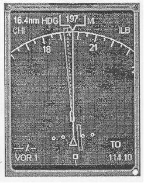
Which mode is selected on the following Navigation Display (EHSI)?
(Refer to figure 022- 12) The green symbol of a circle with T/D appears on the EHSl display. it represents:
(Refer to figure 022-04) 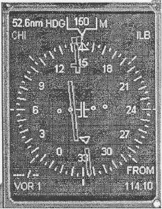
Which mode is selected on the following Navigation Display (EHSI)?
The Decision Height (DH) warning light comes on when an aircraft:
The Head Up Display (HUD) is a device allowing the pilot, while still looking outside, to have:
ln order to know in which mode the autothrottles are engaged, the crew will check the:
(Refer to figure 022-06) The diagram which shows a 40° right bank and 15° nose down attitude ls:
(refer to figure 022-03) An aircraft is under guidance mode following a VOR radial. From the ADI and HSI information represented in the atached diagram, it is possible to deduce that the aircraft is:
(Refer to figure 022-03) 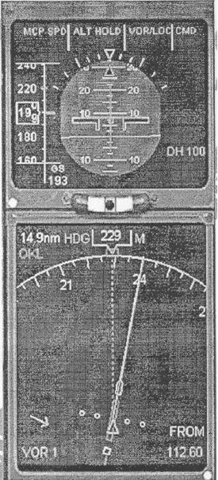
From the ADI and HSI information represented in the attached diagram, it is possible to deduce that the aircraft is:
(Refer to figure 022-13) 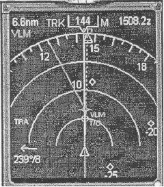
The T/C is a ____ and it will be reached at approximately_____.
(Refer to figure 022-12) 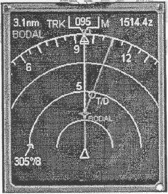
The white arrow in the lower-left corner indicates:
(Refer to ?gure 022-15) 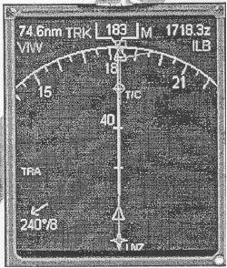
What is the current active waypoint?
(refer to figure 022-19) 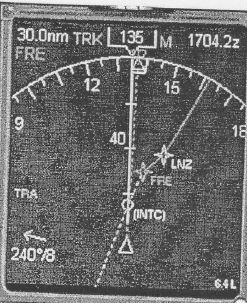
What is the meaning of the white circle with (INTC) next to it?
(Refer to ?gure 022-20) On what heading is the aircraft currently flying?
(Refer to figure 022-20) 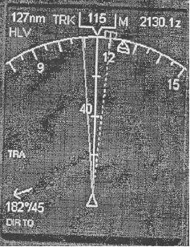
What value is selected by the heading selector (heading bug)?
(Refer to figure 022-20) On what track is the aircraft currently flying?
(Refer to figure 022-21) which mode is selected on the following Navigation Display (EHSI)?
(Refer to figure 022-23) 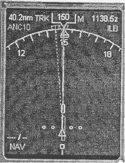
which mode is selected on the following Navigation Display (EHSI)?
(Refer to figure 022-24) 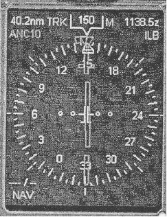
Which made is selected on the following Navigation Display (EHSI)?
(Refer to figure 022-22) 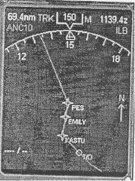
Which mode is selected on the following Navigation Display (EHSI)?
(refer to figure 022-21) 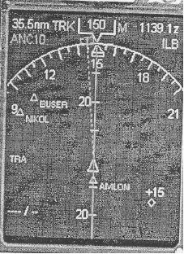
Refer to the attached Navigation display ( EHSI). What is the current active waypoint?
What colour is used to display command information on the EHSI?
On which of the following modes can weather information be displayed?
(refer to figure 022-20) with reference to the EHSI display. The instantaneous track of the aircraft is:
An IRS is aligned in order to:
A rate integrating gyro is used in which of the following: 1) inertial attitude unit 2) autopilot system 3) stabilizer servo mechanism system 4) inertial navigation unit 5) rate of turn indicator
For a FMS designed with the vertical navigation (VNAV) capability coupled to the autopilot, the FMS vertical command output can be: 1) the angle of attack 2) the pitch angle 3) the vertical acceleration 4) the speed target The combination regrouping all the correct statements is.
For most FMS the Fuel prediction function, which computes the remaining fuel along the flight plan, takes into account the following situations: 1) the additional drag resulting inn a flight carried out with the landing gear extended 2) the additional drag resulting in a flight carried out with one engine inoperative 3) the programmed wind direction and speed for the entire remainder of the flight 4) the current wind direction and speed The combination regrouping all the correct statements is:
Some of the FMS have a navigation mode called Dead Reckoning mode (DR), computing airspeed, heading, wind data ground speed and time. This mode is:
The duration of a FMS navigation database loaded before expiring is:
The FMS cross track (XTK) is:
The FMS is approved to provide guidance for the following approaches: 1) RNAV 2) PAR 3) VOR/DME, VOR 4) MLS The combination which regroups all of the correct statements is:
The FMS is approved for Localizer approaches:
The FMS navigation database includes the following data: 1) airports 2) takeoff speeds 3) navaids 4) terrain cells 5) runways The combination which regroups all of the correct statements is:
The FMS navigation database includes the following data: 1) obstacles 2) waypoints 3) SID, STAR 4) terrain cells 5) magnetic variation The combination which regroups all of the correct statements is:
The FMS overfly function consists in:
The FMS vertical navigation management is generally perfomied based on:
The Fuel management performed by most FMS along the flight plan is considered as:
The most common sensors interfacing a FMS to compute the aircraft position along the flight plan are: 1) MLS 2) GPS 3) VOR 4) IRS The combination which regroups all of the correct statements is:
The role of the FMS (Flight Management System) is to: 1) aid the crew with navigation 2) shut down the engine in case of a malfunction 3) automatically avoid con?icting traffic when autopilot engaged 4) reduce crew workload 5) aid fuel efficiency The combination regrouping all the correct statements is:
When two waypoints are entered on the FMS flight plan page, a track between the two fixes is computed and can be displayed on the Navigation map Display (ND). This leg created is:
in an aircraft equipped with a twin inertial system, the FMC displayed position:
An FMC auto-tunes DMEs for fixing purposes and would normally decode and display the Morse identifier. What happens when a decode cannot be achieved?
Assuming an FMC is operating in LNAV and VNAV and a waypoint is reached beyond which no further waypoints are defined:
The cost index option on the CDU is:
The flight director indicates the:
(Refer to figure 022-01) 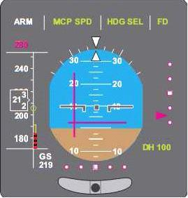
After having programmed your flight director, you see that the indications of your ADI (Attitude Director Indicator) are as represented in the diagram of the figure. On this instrument, the command bars indicate that you must bank your airplane to the left and:
On a modern aircraft, the flight director modes are displayed on the:
The position of a flight director command bars:
For capturing and keeping a preselected magnetic heading, the flight director computer takes into account: 1) track deviation 2) rate of track closure 3) rate of change of track closure 4) wind velocity given by the inertial reference unit The combination regrouping all the correct statements is:
Mode Localizer ARM" activation on flight director means:
Where are the flight director modes displayed?
Flight Director information supplied by an FD computer is presented in the form of command bars on the following instrument:
The essential components of a flight director are: 1) a computer 2) an automatic pilot 3) an autothrottle 4) command bars The combination of correct statements is:
The aim of the flight director is to provide information to the pilot:
On which instrument are the flight director bars normally present?
The command bars of a flight director are generally represented on an:
An aircraft flies steadily on a heading 270°. The flight director is engaged in the heading select mode (HDG SEL), heading 270° selected. if a new heading 360° is selected, the vertical trend bar:
The "heading hold" mode is selected on the flight director (FD) with a course to steer of 180°. The actual heading of your aircraft is 160°. The vertical bar of the FD:
The autopilot is in heading select mode, and the aircraft is flying on a heading of 270°. If you change the heading reference to 360°, the flight director:
(Refer to figure 022-07) 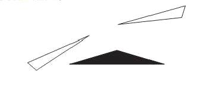
After having programmed your flight director, you see that the flight director indications are as represented in the diagram. This indicates that you must:
(Refer to figure 022-02) 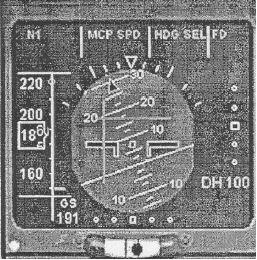
After having programmed your flight director, you see that the indications of your ADl (Attitude Director indicator) are as represented in diagram. On this instrument, the command bars indicate that you must bank your airplane to the left and:
(Refer to figure 022-21) 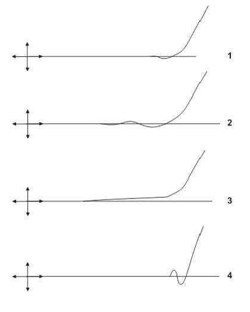
Four scenarios of VOR axis interception are represented in the appended annex. The one corresponding to the optimal interception path calculated by a flight director is number:
(refer to figure 022-38) After having programmed your flight director, you see that the indications of your ADI (Attitude Director indicator) are as represented in diagram Number 1of the appended annex. On this instrument, the command bars indicate that you must:
Command bars of the flight director may be present on the: 1) HSI 2) EICAS 3) CDU 4) ADI The combination containing all of the correct statements is:
Considering a flight director of the "command bars " type:
Considering a flight director of the "command bars" type:
Considering a flight director of the command bars" type: 1) The vertical bar is always associated with the roll channel. 2) The vertical bar may be associated with the pitch channel. 3) The horizontal bar may be associated with the roll channel. 4) The horizontal bar is associated with the pitch channel. The combination regrouping all the correct statements is:
During a final approach, if the flight director system is engaged in the G/S mode (holding of ILS glide slope), the position of the horizontal command bar indicates:
During a final approach, the flight director system is engaged in the G/S mode (holding of ILS glide slope). The position of the horizontal command bar indicates: 1) the position of the aircraftrelative to the ILS glide slope 2) the correction on the pitch to be applied to join and follow the ILS glide slope 3) the instantaneous deviation between the aircraft position and the ILS glide slope The combination regrouping all the correct statements ls:
During a final approach, the flight director system is engaged in the LOC mode (holding of localizer axis). The position of the vertical command bar indicates:
During a final approach, the flight director system is engaged in the LOC mode (localizer axis holding). The position of the vertical command bar indicates: 1) the position of the aircraft relative to the localizer axis 2) the roll attitude of the aircraft 3) the correction on the bank to be applied to join and follow the localizer axis The combination regrouping all the correct statements is:
The flight director provides information for the pilot:
The horizontal command bar of a flight director:
The horizontal command bar of a flight director: 1) repeats the position information given by the ILS in the horizontal plane 2) repeats the position information given by the ILS in the vertical plane 3) gives information about the direction and the amplitude of the corrections to be applied on the pitch of the aircraft 4) gives information only about the direction of the corrections to be applied on the pitch of the aircraft The combination regrouping all the correct statements is:
The parameters taken into account by the flight director computer in the altitude hold mode (ALT HOLD) are: 1) altitude deviation 2) engine RPM 3) ground speed 4) pitch attitude The combination regrouping all the correct statements is:
The position of a Flight Director command bars:
The purpose(s) of the flight director system is (are) to: 1) give the position of the aircraft according to radioelectric axis 2) give the position of the aircraft according to waypoints 3) to aid the pilot when flying manually The combination regrouping all the correct
The vertical command bar of a flight director:
The vertical command bar of a flight director:
The output data of the flight director computer are:
The vertical command bar of a flight director: 1) repeats the position information given by the EHSI 2) repeats the position information given by the VOR 3) gives information about the direction and the amplitude of the corrections to be applied The combination regrouping all the correct statements is:
The vertical command bar of a flight director: 1) repeats the position information given by the ILS in the horizontal plane 2) repeats the position information given by the ILS in the vertical plane 3) gives information about the direction and the amplitude of the corrections to be applied The combination regrouping all the correct statements is:
To allow the coupling of a dual channel flight director:
(refer to figure 022-38) 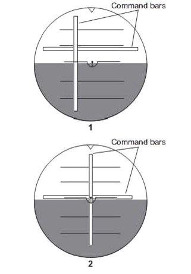
After having programmed your flight director, you see that the indications of your ADI (Attitude Director indicator) are as represented in diagram number 1. On this instrument, the command bars indicate that you must bank your airplane to the left and:
(Refer to figure 022-06) 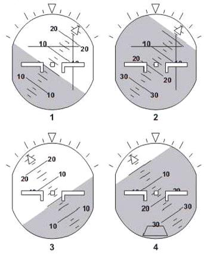
The FD command bars on the ADI (illustration number 2) indicate that:
(Refer to figure 022-01) The ADI presentation shows that the aircraft is (VSI reading zero):
Flight Director operation:
Flight Director operation is selected by:
If you have selected a heading of 180° and are flying aircraft on heading of 160° to intercept the correct course, the ADI vertical FD bar will be centred:
When turning into a desired radial, FD bars indicate:
The Flight Director horizontal and vertical bars are up and left of aircraft symbol on the ADI, these indications are directing the pilot to:
An autopilot system:
An automatic pilot is a system which can ensure the functions of:
ln a closed loop system a device in which a small input operates a large output in a strictly proportional manner is called:
During a CAT 2 approach, what is providing the height information to the autopilot?
ln an auto-pilot system, aircraft flight path modes include which of the following: 1) Pitch attitude holding. 2) Horizontal wing holding. 3) VOR axis holding. 4) Inertial heading holding. 5) ASI and Mach hold. 6) Yaw damper.
During an automatic landing, from a height of about 50 ft the:
On an autopilot coupled approach, GO AROUND" mode is engaged:
The control law of a transport airplane autopilot control channel may be defined as the relationship between the:
An automatic landing system necessitating that the landing be continued manually in the case of a system failure during an automatic approach is called fail:
In automatic landing mode, when the 2 autopilots are used, the system is considered:
When an automatic landing is interrupted by a go-around: 1) the autothrottle reacts immediately upon the pilot action on the TO/GA (Takeoff/Go-Around) switch in order to recover the maximum thrust. 2) the autopilot monitors the climb and the rotation of the airplane. 3) the autopilot retracts the landing gear and reduces the flap deflection in order to reduce the drag. 4) the pilot performs the climb and the rotation of the airplane. 5) the pilot retracts the landing gear and reduces the flap deflection in order to reduce the drag. The combination regrouping all the correct statements is:
When only one autopilot is used for climbing, cruising and approach, the system is considered:
At 50 feet AGL during an auto-land, what happens to the glideslope signal?
When an aircraft, operating in the VOR coupled mode, approaches the CONE OF CONFUSION over a VOR station, the roll channel of the autopilot:
In an autopilot slaved powered control circuit, the system which ensures synchronisation:
The autopilot is engaged with no modes selected. What is the autopilot providing:
In a transport airplane, an autopilot comprises, in addition to the mode display devices, the following fundamental elements: 1) Airflow valve 2) Sensors 3) Comparators 4) Computers 5) Amplifiers 6) Servo-actuators The combination re-grouping all the correct statements is:
When operating with the autopilot in ALT hold mode what happens if the Captain's barometric altimeter pressure setting is increased?
If a Go-around is initiated from an autoland approach: 1) the auto-throttle selects GA power as soon as the TOGA switch is pressed 2) the auto pilot carries out the climb 3) the auto pilot retracts flaps and landing gear to reduce drag 4) the pilot carries out the procedure 5) the pilot cleans up ( retracts the flaps and raises gear)
When the attitude acquisition mode is engaged on a jet transport airplane equipped with autopilot (AP) and autothrottle (A/T) systems the:
A pilot engages the control wheel steering (CWS) of a conventional autopilot and carries out a manoeuvre in roll. When the control wheel is released, the autopilot will:
An autopilot is selected "ON" in mode "altitude hold". the pilot alters the barometric pressure set on the sub-scale of his altimeter the:
What are the autopilot minimum requirements in order to fly single pilot operations in IFR conditions or at night?
An automatic landing system which can keep on operating without deterioration of its performances following the failure of one of the autopilots is called:
In automatic landing mode, incase of failure of one of the two autopilots, the system is considered:
Auto-land 'flare' is intiated at:
A landing will be considered to be performed in the SEMI-AUTOMATIC mode when: 1) the autopilot maintains the airplane on the ILS beam until the decision height is reached then is disengaged automatically. 2) the autothrottle maintains a constant speed until the decision height is reached then is disengaged automatically. 3) the autopilot maintains the airplane on the ILS beam until the flare. 4) the autothrottle decreases the thrust when the height is approximately 30 ft. 5) the flare and the ground roll are performed automatically. The combination regrouping all the correct statements is:
During a fully automatic landing, the auto-pilot:
In heading select the auto-pilot delivers roll commands to the controls to bank the aircraft: 1) proportional to TAS, but not beyond a specified maximum. 2) set bank of 27 degrees. 3) set bank of 15 degrees. 4) proportional to the deviation from the selected heading
A semi-automatic landing system disconnects itself automatically:
The control law in a fly-by-wire system is a relationship between:
If only a single A/P is used to climb, cruise and approach; following a failure of an inner loop component:
During a Category ll automatic approach, the height information is supplied by the:
The altitude alert system:
An auto-land system which can continue to automatically land the aircraft after a single failure is called:
What is the wavelength of an ILS signal?
The functions of an autopilot (basic modes) consist of:
An autopilot system whereby if one A/P fails cannot carry out an auto-land is called fail..
An autopilot capable of altitude hold and heading hold is a minimum requirement for:
If the auto-pilot is selected to VOR mode, what happens if the aircraft flies over the cone of confusion?
What does the autopilot pitch / rotate around?
ln the automatic trim control system of an autopilot, automatic trimming is normally effected about the:
The auto-pilot disconnects (or the auto-land is completed) at:
On a modern transport category aeroplane, the engagement of the automatic pilot is checked on the display of:
At what height during a semi-automatic landing is the autopilot disengaged?
What is the most basic function of an autopilot?
The auto synchronisation system does which of the following? 1) Prevents snatching on engagement. 2) Prevents snatching on disengagement. 3) Cancels rudder input. 4) Works in climb, cruise and descent.
if a pilot was to carry out a roll manoeuvre, on release of the control column with the autopilot in CWS mode, what does the autopilot do?
On crossing the cone of confusion of a VOR when in VOR mode of the autopilot what will happen to the roll channel?
When must a 2 axis auto-pilot be fitted in the aircraft?
if a go-around is initiated from a single autopilot coupled ILS approach: 1) The autothrottle selects GA power as soon as the TOGA switch is pressed. 2) The autopilot carries out the climb. 3) The autopilot retracts flap and landing gear to reduce drag. 4) The pilot carries out the procedure. 5) The pilot cleans up (retracts flaps and raises gear)
During the Altitude Acquisition mode:
The yaw damper indicator supplies the pilot with information regarding the:
The yaw damper, which suppresses Dutch roll:
The yaw damper affects:
The yaw damper system controls:
The Yaw Damper system: 1) counters any wrong pilot action on the rudder pedals 2) counters Dutch roll 3) is active only when autopilot is engaged The combination regrouping all the correct statements are:
In a yaw damper:
The automatic pitch trim: 1) ensures the aeroplane is property trimmed when the autopilot is engaged. 2) permits the elevator to always be in neutral position with respect to horizontal stabilise! 3) ensures the aeroplane is properly trimmed when the autopilot is disengaged. The combination regrouping all the correct statements is:
Which one of the following statements is true with regard to the operation of a Mach trim system:
The automatic trim is a component of the autopilot pitch channel. its function is to:
The purpose of auto trim function in autopilot is to:
The purpose of an airplane automatic trim system is to trim out the hinge moment of the:
When the auto-pilot is engaged; The role of the automatic trim is to:
Mach trim is a device to compensate for:
The purpose of the automatic trim is to: 1) reduce to zero the hinge moment of the entire control surface in order to relieve the load on the servo-actuator 2) ensure the aeroplane is properly trimmed when the autopilot is disengaged 3) maintain the same stability/manoeuvrability trade-off within the whole flight envelope The combination regrouping all the correct statements is:
The Mach trim system allows to:
Auto trim is fitted to an autopilot:
The function of auto trim is:
The Mach trim system:
What does the Mach trim system use to prevent "Mach tuck"?
The two main sources of information used to calculate turbojet thrust are the:
An aircraft is equipped with an autopilot and an autothrottle. When the altitude hold mode (ALT HOLD) is active:
An airplane is in steady climb. The autothrottle maintains a constant Mach number. lf the total temperature remains constant, the calibrated airspeed:
The purpose of auto throttle is:
Auto throttle engaged mode can be checked by the pilot, using:
An aeroplane is in steady climb. The autothrottte maintains a constant calibrated airspeed. If the total temperature remains constant, the Mach number:
An aeroplane is in steady cruise at FL 270. The autothrottle maintains a constant calibrated airspeed. If the total temperature Increases, the Mach number:
Where can the pilot look to see the auto-throttle engaged mode?
ln order to know in which mode the autothrottles are engaged, the crew will check the:
Alarms are standardized and follow a code of colours. Those requiring action but not immediately, are signalled by the colour:
Concerning the flight warning system (FWS), advisory messages may be:
Concerning the flight warning system (FWS), caution messages:
Concerning the flight warning system (FWS), if aural signals are provided, the signal for:
Concerning the flight warning system (FWS), warning messages:
lf crew awareness is required and subsequent crew action may he required, the flight warning system (FWS) generates:
lf immediate crew awareness is required and subsequent crew action will be required, the flight warning system (FWS) generates:
if immediate recognition and corrective or compensatory action by the crew is required, the flight warning system (FWS) generates:
If warning, caution, or advisory lights are installed in the cockpit, they must, unless otherwise approved by the Authority, be amber for:
If warning, caution, or advisory lights are installed in the cockpit, they must, unless otherwise approved by the Authority, be green, for:
if warning, caution, or advisory lights are installed in the cockpit, they must, unless otherwise approved by the Authority, be red for:
Lights indicating a hazard which require immediate corrective action must be:
Lights indicating the possible need for future corrective action must be:
The flight warning system (FWS) generates a caution message it:
The flight waming system (FWS) generates a warning message it:
The flight waming system (FWS) generates an advisory message if:
The flight warning system (FWS): 1) Draws the attention of the crew to the existence of an abnonnal condition. 2) Gives indications to the crew to identify an abnormal condition. 3) Transmits automatically to ATC urgency messages. 4) Can not generate a false warning. 5) Prioritizes warnings over advisories. The combination regrouping all the correct statements is:
The flight warning system (FWS): 1) increases the situation awareness of the crew. 2) Transmits automatically to ATC distress messages. 3) Gives suitable Indications to the crew of the action necessary to avoid impending danger. 4) Prioritises warnings over alerts. 5) Prioritises alert over warnings. The combination regrouping all the correct statements is:
An altitude alerting system must be capable of alerting the pilot about: 1) Approaching selected altitude. 2) Excessive deviation from selected altitude. 3) Excessive vertical speed. 4) Excessive terrain closure. 5) Abnormal gear/flap combination. The combination regrouping the correct statements is:
The altitude alerting system:
The inputs to the GPWS (Ground Proximity Warning System), are: 1) Air data computer - (Mach number and vertical speed) 2) Radio altimeter 3) NAV/ILS (glide slope) 4) NAV/VOR 5) Flap (position) 6) Angle of attack 7) Landing gear (position) The combination of correct statement is:
If the GPWS (Ground Proximity Warning System) activates, and alerts the pilot with an aural warning "DON'T SINK" (two times), it is because:
The Ground Proximity Warning System (GPWS) generates the following sound signal or signals when the aircraft is sinking after a takeoff or a go-around:
A TCAS II generates a resolution advisory (RA) when:
A TCAS II generates a traffic advisory (TA) when:
Your aircraft and an intruding aircraft both are TCAS ll (Traffic alert and Collision Avoidance System) equipped. Your TCAS determines the bearing of the intruding aircraft by:
Your aircraft is TCAS ll equipped. To be able to generate a traffic advisory (TA), the intruder must be at least equipped with:
Your aircraft is TCAS It equipped; an intruding traffic only has a mode A transponder. The information available to your TCAS equipment is:
Your aircraft is TCAS ll equipped; an intruding traffic only has a mode C transponder. The information available to your TCAS equipment is:
A VMO - MMO warning device consists of an alarm connected to:
The input(s) of a VMO/MMO waming system is (are):
When the flight warning system (FWS) identifies an overspeed condition (airspeed exceeding Vmo/Mmo), it generates:
The calculator combined with the stick shaker system of a modern transport airplane receives information about the: 1) angle of attack 2) engine RPM 3) configuration 4) pitch and bank attitude 5) sideslip The combination regrouping all the correct statements is:
The main input data to the Stall Warning Annunciator System are: 1) Machmeter indication. 2) Angle of attack. 3) lndicate airspeed (IAS). 4) Aircraft configuration (flaps/slats). The combination regrouping all the correct statements is:
A stall warning system is based on a measure of:
The angle of attack transmitters placed laterally on the forward part of the fuselage supply an electrical signal indicating: 1) the angular position of a wind vane 2) a differential pressure in a probe, depending on the variation of the angle of attack 3) a differential pressure in a probe, depending on the variation of the speed The combination regrouping all the correct statements is:
The stick shaker calculator receives the following information: 1) mass of the airplane 2) angle of attack 3) wing flap deflection 4) position of the landing gear 5) total air temperature 6) pressure altitude The combination regrouping all the correct statements is:
The oncoming stall of a large transport airplane appears in the form of:
In some configurations, modern aircraft do not respect the regulatory margins between stall and natural buffet. The warning system supplies the corresponding alarm. The required margin related to the stall speed is:
The stall warning system of a large transport airplane includes: 1) an angle of attack sensor 2) a computer 3) a transmitter originating from the anemometer 4) an independent pitot probe 5) a transmitter of the flap/slat position indicating system The combination regrouping all the correct statements is:
The angle of attack transmitter provides an electric signal varying with: 1) the angular position of a wind vane 2) the deviation between the airplane flight attitude and the path calculated by the inertial unit 3) a probe differential pressure depending on the variation of the angle of attack The combination regrouping all the correct statements is:
The stall warning system receives information about the: 1) airplane angle of attack 2) airplane speed 3) airplane bank angle 4) airplane configuration 5) load factor on the airplane The combination regrouping all the conect statements is:
A stall warning system is based on measuring the:
An angle of attack sensor may consist of: 1) an inertial system computing the difference between flight path and flight attitude 2) a conical slotted probe which positions itself to determine the angle of attack 3) a vane detector which positions The combination regrouping all the correct statements is:
in case of impending stall, the flight warning system (FWS) generates:
The angle of attack transmitter placed laterally on the forward part of the fuselage supplies an electrical signal which can indicate the angular position of: 1) a specific slaved pitot probe 2) a vane detector 3) a conical slotted probe The combination regrouping all the correct statements is:
Flight recorder duration must be such that flight data, cockpit voice and sound warnings may respectively be recorded during at least:
The cockpit voice recorder must preserve the conversation and aural warnings of the last:
The Bourdon tube" is used to measure:
The engine pressure ratio (EPR) is computed by:
The pressure probe used to measure the pressure of a low pressure fuel pump is:
The probe used to measure me air intake pressure of a gas turbine engined powerplant is:
Different pressure sensors are used according to the intensity of the pressure measured (low, medium or high). Classify the following sensors by order of increasing pressure for which they are suitable: 1) bellows type 2) Bourdon tube type 3) aneroid capsule type
A Bourdon tube" is used in:
Among the following engine instruments, the one operating with an aneroid pressure diaphragm is the:
If a manifold pressure gauge consistently registers atmospheric pressure, the cause is probably:
A manifold pressure gauge of a piston engine measures:
The EPR (Engine Pressure Ratio) is:
The sensor(s) feeding the EPR-indicator is (are):
To be as accurate as possible, an anemometer must be calibrated according to the following formula:
Total air temperature (TAT) is:
A thermocouple can be made of:
The total air temperature (TAT) is always:
The temperature measured by the CHT (Cylinder Head Temperature) probe is the:
To permit turbine exit temperatures to be measured, gas turbines are equipped with thermometers which work on the following principle:
The static air temperature (SAT) is:
A millivoltmeter measuring the electromotive force between the hot junction and the cold junction" of a thermocouple can be directly graduated in temperature values provided that the temperature of the:
The main advantage of a ratiometer-type temperature indicator is that it:
The measurement of the turbine temperature or of the EGT (Exhaust Gas Temperature) is carried out at the:
Given: M = the Mach number Ts = the static temperature Tt = the total temperature
The electromotive force of a termocouple is not modified if one or several intermediate metals are inserted if one or several intermediate metals are inserted in the circuit provided that:
A ratiometer:
The signal supplied by a transmitter fitted with a 3-phase AC generator, connected to RPM Indicator, is:
The electronic tachometer sensor is composed of:
ln a 3-phase synchronous motor type tachometer indicator: 1) The transmitter is a direct current generator. 2) The voltage is proportional to the transmitter drive speed. 3) The frequency is proportional to the transmitter drive speed. 4) The speed indicating element is a galvanometer. 5) The speed indicating element is a synchronous motor driving a magnetic tachometer. The combination regrouping all the correct statements is.
A synchroscope is used on aircraft to:
The advantages of single-phase AC generator tachometer 1) the suppression of spurious signals due to a DC generator commutator 2) the importance of line resistance on the information value 3) the independence of the information in relation to the airborne electrical power supply 4) the ease of transmission of the information The combination regrouping all the correct statements is:
The signal supplied by a transmitter fitted with a magnetic sensor, connected to an RPM indicator ls:
The operating principle of the INDUCTION type of tachometer is to measure the:
Gas turbine engine rotational speed (RPM) is usually sensed using either:
The operating principle of flow meters, or "unit flow meters, " the most commonly used at the present time, is to measure across their system the:
A paddle-wheel placed in the fuel circuit of a gas turbine engine initially measures:
If the tanks of your airplane only contain water; the capacitor gauges indicate:
The float type fuel gauges provide information on:
The capacity fuel gauges provide information:
The principle of capacitor gauges is based on:
The advantages of an "electric" fuel (float) gauge are: 1) easy construction 2) independence of indications with regard to airplane attitude 3) Independence of indications with regard to the accelerations 4) independence of indications with regard to temperature variations 5) independence of indications with regard to vibrations The combination regrouping all the correct statements is:
A fuel mass capacitance system works on the principle of fuel density being:
Torque can be determined by measuring the:
A vibration indicator receives a signal from different sensors (accelerometers). it indicates the:
In an engine vibration monitoring system for a turbojet any vibration produced by the engine is:
The principle of detection of a vibration monitoring system is based on the use of:
The output from an engine vibration transducer is:
Vibration is indicated in the cockpit as:
A three-phase electrical tachometer consists of:
The operating principle of an "electronic" tachometer is to measure the:
in a modern airplane equipped with an ECAM (Electronic Centralized Aircraft Monitoring system), when a system failure is detected, the ECAM system: 1) releases an aural warning 2) lights up the appropriate push-buttons on the overhead panel 3) displays the relevant diagram on the system display 4) processes the failure automatically The combination re-grouping all the correct statements is:
The CRTs of an EICAS system: 1) can be interchanged between upper and lower displays 2) can be compacted together into one CRT 3) are controlled by the EICAS controller situated on the overhead panel 4) do not normally show EGT on the primary display 5) normally show secondary engine indications on the upper display 6) are provided with individual brightness controls The combination re-grouping all the correct statements is:
In the event of a failure of the ECAM system, the system will: 1) give warnings 2) light the appropriate buttons 3) bring up the appropriate system page 4) carry out the appropriate actions
What indications are received of an ECAM failure?
Which of the following are pages of the ECAM secondary display? 1) engine 2) fire 3) trim 4) hyd 5) wheel 6) cruise